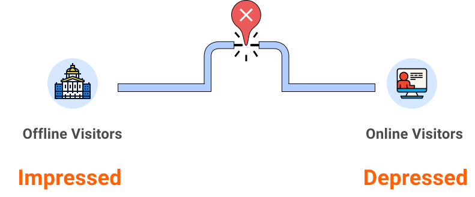

Design interactive data visualization features for www.loc.gov to help its users better understand the breadth of the Library's collection.
Challenge Winner (1st/129)
To understand what makes it hard for the users of Library of Congress's website to discover the breadth of the collections, I carried out a primary research and secondary researches to uncover the problem.
To quickly collect users feeling about Library Of Congress's physical site, we read through the reviews on Yelp.
Yelp Reviews
Visitors who visited the Library in person were really impressed by the variation and amount of collections.
Semi-structured Interview
Visitors who visited the LOC website were really depressed by the difficulty to know well about the collections.
There is a huge gap between visitor's online and offline experience...

How do we close the gap between experiences online and offline?
We established three design principles to make sure our solutions align with our design goals.
Tell users what may interest them directly
Allow users quickly access key information with scanning to discover interesting information.
Keywords and thumbnails can help users scan information efficiently.
Utilize visualization to help users absorb large amounts of data at glimpse, to identify patterns and trends.
We brainstormed a lot of solutions, and evaluate them based our design principles, and the effort cost and impact.
Part I. Use Color-coding to distinguish collection formats & trending
Part II. Overview and interactive with volume and format over time
Part III. Real-time user counts and collection item numbers to improve engagement
And we got some valuable feedbacks from the jury members:
I loved the overall execution. The counting numbers at the top I found them brilliant as it really gives you a sense of how many files exist. I really liked the simplicity of the themes and color codes and how they were divided into the data visualization charts.
Prioritize jobs is important, especially when schedule is tight.
It is really a challenge to do a 48 hour hackathon. Figuring out a schedule for the day down to the minute is the key to completion. Clear roles and responsibility helps to get the most of collaboration.
Establishing design principles before coming to solutions will help you stick to your design goal, and achieve impactful solution more efficiently.
There are always trade-offs in the world of design, designers can come up with tons of interesting ideas for a challenge. But which ones are aligning to the goals? It is helpful when design principles are established, and each solution can be evaluated based on the principles.
What's the next step?
Designing for accessibility. Color-coded interface is efficient, but it breaks the accessibility. Designing for visually impaired will be the next step for my ongoing explorations for this project.
Thanks for reading!